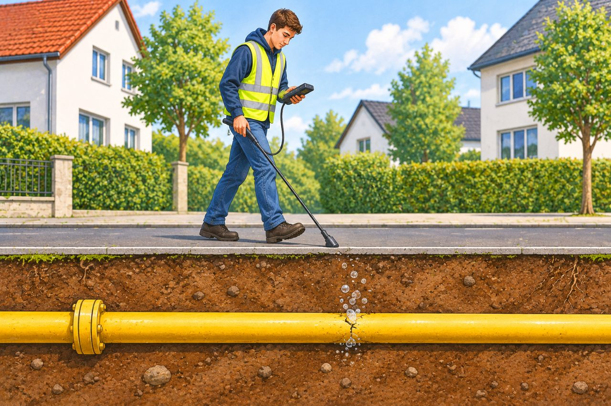

Ein Bild aus dem Hals: das Szintigramm

Denk mal nach: Unter der Straße ist eine Gasleitung undicht. Wie findet der Techniker die undichte Stelle, ohne die ganze Straße aufzureißen? Die Antwort bekommst du in Station 3.
Radioaktive Strahlung ist gefährlich. Sie hat aber zwei Eigenschaften, die sehr nützlich sind: Man kann sie messen – sogar durch Haut, Erde und Metall hindurch. Und sie kann Zellen zerstören.
Darum nutzt man sie in der Medizin: zum Erkennen von Krankheiten, der , und zum Behandeln. Und in der Technik: zum Suchen von Fehlern, die man von außen nicht sieht.
Die sitzt vorn am Hals, unter dem Kehlkopf. Sie sieht aus wie ein kleiner Schmetterling. Sie stellt her, zum Beispiel für das Wachstum.
Für diese Hormone braucht sie . Das nimmt sie aus der Nahrung und dem Trinkwasser auf – darum gibt es Speisesalz mit Iod. Die Schilddrüse holt das Iod aus dem Blut und speichert es.
So entsteht ein Bild der Schilddrüse:
- Die Ärztin spritzt eine winzige Menge radioaktives Iod in eine Vene. Es ist ein radioaktives des Iods.
- Es verhält sich chemisch genau wie normales Iod: Mit dem Blut gelangt es in die Schilddrüse und reichert sich dort an.
- Die Kerne zerfallen und senden γ-Strahlung aus. Sie dringt durch den Hals nach außen.
- Eine misst die Strahlung. Ein Computer macht daraus ein Bild: das .
Tippe auf eine Person. Sie bekommt radioaktives Iod gespritzt, dann misst die Gammakamera (im Zeitraffer – in Wirklichkeit dauert es länger). Untersuche alle drei und vergleiche die Bilder.
| Person | Szintigramm | Was bedeutet das? |
|---|---|---|
| Frau Kaya | ||
| Herr Lindner | ||
| Frau Berg |
Warum eine kurze Halbwertszeit? Für das Szintigramm nimmt man ein Iod-Isotop mit kurzer , zum Beispiel Iod-123: Nach etwa 13 Stunden ist die Hälfte zerfallen, nach drei Tagen fast alles. So ist der Körper nur kurz belastet.
Mit der Menge ist man sehr sparsam: Die Ärztin nimmt nur so viel, wie für ein gutes Bild nötig ist.
MERKE
- Die Schilddrüse nimmt Iod aus Nahrung und Wasser auf und speichert es.
- Für ein Szintigramm spritzt man winzige Mengen radioaktives Iod in die Blutbahn. Es reichert sich in der Schilddrüse an und zerfällt.
- Eine Gammakamera misst die Strahlung, ein Computer macht daraus ein Bild: das Szintigramm. Krankes Gewebe nimmt meist weniger Iod auf als gesundes – es erscheint dunkler.
- Der Stoff hat eine kurze Halbwertszeit. So ist der Körper nur kurz belastet.
Der Weg des radioaktiven Iods
Bringe die Schritte mit den Pfeilen in die richtige Reihenfolge.
So funktioniert das Szintigramm
Tippe zuerst auf eine Lücke, dann auf das passende Wort. Zwei Wörter bleiben übrig.
Strahlentherapie gegen Krebs
Bei Krebs teilen sich Zellen ohne Halt. Es entsteht ein , auch Krebsgeschwür genannt. Er wächst und kann gesundes Gewebe zerstören.
Bei der bestrahlt man den Tumor mit sehr energiereicher Strahlung. Man nennt sie : Sie kann Atome und Moleküle in den Zellen verändern – genau wie die radioaktive Strahlung.
Warum gerade Krebszellen? Krebszellen teilen sich sehr schnell. Deshalb reagieren sie besonders empfindlich auf Strahlung und werden zerstört. Gesunde Zellen können kleine Schäden oft wieder reparieren.
Das Ziel: möglichst nur das kranke Gewebe zerstören. Dazu berechnet das Ärzteteam genau, wie viel Strahlung nötig ist – die . Wie man das gesunde Gewebe schont, zeigt die Animation.
⚠️ Risiko: Auch gesundes Gewebe bekommt etwas Strahlung ab. Selten löst die Strahlung Jahre später selbst Krebs aus.
MERKE
- Bei der Strahlentherapie bestrahlt man Krebsgeschwüre (Tumore) mit energiereicher Strahlung.
- Krebszellen teilen sich schnell. Deshalb sind sie besonders empfindlich gegen Strahlung und werden zerstört.
- Man will möglichst nur das kranke Gewebe zerstören: Die Strahlenmenge wird genau berechnet, Strahlen aus vielen Richtungen treffen sich im Tumor.
- Risiko: Auch gesundes Gewebe wird belastet. Strahlung kann selbst Krebs erzeugen.
Was stimmt bei der Strahlentherapie?
Erkläre in eigenen Worten ✨ KI prüft
Schreibe ganze Sätze oder Stichpunkte. Die KI achtet nur auf den Inhalt, nicht auf die Rechtschreibung.
Technik: Lecks und Risse finden
Die Leckstellensuche. Unter vielen Straßen liegen Leitungen für Erdgas. Ist eine Leitung undicht, strömt Gas aus. Die undichte Stelle, das , kann irgendwo auf vielen hundert Metern liegen. Ohne Hilfe müsste man die Straße auf der ganzen Länge aufgraben.
Der Trick: Man gibt dem Erdgas eine kleine Menge des radioaktiven Gases bei. Am Leck strömt es mit dem Erdgas aus und steigt durch den Boden nach oben.
Mit einem geht man die Straße ab. Wo die Zählrate am höchsten ist, liegt das Leck. Nur dort wird gegraben.
Irgendwo unter dieser Straße ist die Gasleitung undicht. Schiebe das Messgerät mit dem Regler an der Straße entlang. Was zeigt der Zähler? Gib dann Xenon zu und suche noch einmal.
Denk mal nach: Von außen sieht die Schweißnaht glatt aus. Was zeigt das Bild auf dem Tablet, das man von außen nicht sehen kann?
Fehler in Werkstoffen finden
Rohrleitungen, Brücken, Kessel in Fabriken und Flugzeuge bestehen aus Metallteilen. Oft sind sie verschweißt. In einer können Gasblasen oder feine Risse versteckt sein. Von außen sieht man sie nicht – aber sie machen das Teil schwach, bis es bricht.
Bei der durchstrahlt man das Teil mit γ-Strahlung (oder Röntgenstrahlung). Dahinter liegt ein Film oder ein Bildsensor. Wo viel Metall ist, kommt wenig Strahlung durch: Das Bild bleibt hell. Wo eine Gasblase oder ein Riss ist, fehlt Metall. Dort kommt mehr Strahlung durch: Es entsteht eine dunkle Stelle. Das Teil wird dabei nicht beschädigt.
Wähle ein Teil. Es wird durchstrahlt, dann erscheint das Bild auf dem Tablet. Entscheide: Ist das Teil in Ordnung oder hat es einen Fehler?
MERKE
- Leckstellensuche: Man gibt dem Erdgas das radioaktive Gas Xenon bei. Am Leck tritt es aus. Über dem Leck misst der Geiger-Müller-Zähler die höchste Zählrate – nur dort muss man graben.
- Werkstoffprüfung: Man durchstrahlt Schweißnähte, Rohre oder Flugzeugteile. Gasblasen und Risse zeigen sich auf dem Bild als dunkle Stellen – ohne dass man das Teil zerstört.
Strahlung in der Technik
Tippe zuerst auf eine Lücke, dann auf das passende Wort. Zwei Wörter bleiben übrig.
Nutzen und Risiko abwägen
Strahlung hilft – sie kann aber auch schaden: Sie kann Zellen und das Erbgut verändern und Krebs auslösen. Darum gilt eine Regel: Strahlung setzt man nur ein, wenn der Nutzen größer ist als das Risiko. Und dann so wenig wie möglich.
- Nur so viel Strahlung wie nötig – die Menge wird genau berechnet.
- In der Medizin Stoffe mit kurzer Halbwertszeit – sie sind schnell zerfallen.
- für alle, die damit arbeiten: Abstand halten, abschirmen (zum Beispiel mit Blei) und nur kurz in der Nähe bleiben.
Nicht jede Untersuchung strahlt. Röntgen, die und das Szintigramm arbeiten mit ionisierender Strahlung. Ultraschall dagegen nicht.
Achtung: Auch das (Kernspintomographie) arbeitet nicht mit radioaktiver Strahlung – obwohl „Kern“ im Namen steckt. Es nutzt ein starkes Magnetfeld und Radiowellen.
Lies den Fall. Ist der Nutzen größer als das Risiko? Tippe auf deine Entscheidung. Dann legt die Waage die Gründe auf und zeigt, ob du richtig liegst.
MERKE
- Radioaktive Strahlung hat großen Nutzen: Krankheiten erkennen und behandeln, Lecks und Fehler in Werkstoffen finden, das Alter von Funden bestimmen (C-14-Methode).
- Sie hat aber auch Risiken: Sie kann Zellen und Erbgut schädigen und Krebs auslösen.
- Deshalb setzt man sie nur ein, wenn der Nutzen größer ist als das Risiko – so wenig wie möglich und mit Strahlenschutz: Abstand, Abschirmung, kurze Zeit.
Wofür nutzt man die Strahlung?
Tippe links eine Anwendung an und dann rechts, was die Strahlung dabei tut.
Mit oder ohne ionisierende Strahlung?
Tippe eine Karte an und dann den passenden Bereich.
Nimm Stellung ✨ KI prüft
Schreibe ganze Sätze oder Stichpunkte. Die KI achtet nur auf den Inhalt, nicht auf die Rechtschreibung.
Training
Löse das Kreuzworträtsel
Tippe in ein Kästchen und schreibe. Tippst du ein Kästchen zweimal an, wechselt die Richtung. Ü schreibst du als UE, ß als SS. Hängst du fest? Bei jeder Frage hilft 💡 Tipp – erst ein Hinweis, dann der Anfangsbuchstabe. Mit 📋 Wörter zeigen siehst du alle Lösungswörter.
Kreuze an
Profi-Check, Lernkarten und Regelheft
Radioaktivität in Medizin und Technik
Medizin – Diagnose (Szintigramm): Radioaktives Iod wird in die Blutbahn gespritzt. Es reichert sich in der Schilddrüse an und zerfällt. Eine Gammakamera misst die Strahlung, der Computer macht daraus ein Bild: das Szintigramm. Krankes Gewebe nimmt meist weniger Iod auf → dunkle Stelle. Der Stoff hat eine kurze Halbwertszeit → nur kurze Belastung.
Medizin – Behandlung (Strahlentherapie): Krebszellen teilen sich schnell und sind deshalb empfindlich gegen Strahlung. Strahlen aus vielen Richtungen treffen sich im Tumor – möglichst nur das kranke Gewebe wird zerstört.
Technik: Leckstellensuche: radioaktives Xenon im Erdgas → über dem Leck die höchste Zählrate (Geiger-Müller-Zähler) → nur dort graben. Werkstoffprüfung: Schweißnähte, Rohre, Flugzeugteile durchstrahlen → Gasblasen und Risse sind dunkle Stellen im Bild.
| Nutzen | Krankheiten erkennen und behandeln · Lecks und Materialfehler finden, ohne alles aufzureißen oder zu zerstören · Alter von Funden bestimmen (C-14) |
|---|---|
| Risiko | Strahlung kann Zellen und Erbgut schädigen und Krebs auslösen. |
Regel: Strahlung nur, wenn der Nutzen größer ist als das Risiko – so wenig wie möglich. Strahlenschutz: Abstand, Abschirmung, kurze Zeit. Das MRT arbeitet ohne radioaktive Strahlung (Magnetfeld).
Wortspeicher
Alle Fachbegriffe dieses Moduls auf einen Blick.
Wie geht es weiter?
Das war das letzte Modul zur Radioaktivität. Wiederhole mit den Lernkarten und den Regelhefteinträgen aller sechs Module – dann bist du gut vorbereitet für die Probe „Radioaktivität“, sobald deine Lehrkraft sie freischaltet.